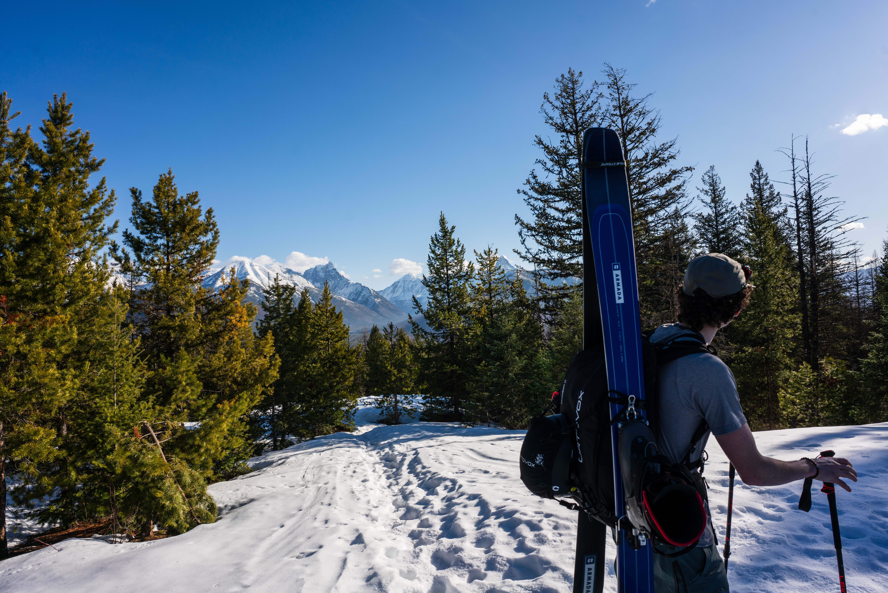

website
Front End
Following my first year of university I felt pretty burnt out coding wise, so to foster some motivation for future projects I set out to try and create this website to act as a portfolio. It's been in style for developers to have a personal website since the early days and that is still true today.
Stylistically, I tried to create an experience that is minimal and clean. This website is heavily inspired by logartis.info a website created by a professional web designer. Though I lack the technical ability and creativity of Gergely Gizella I can take after his choice of font and style of UI. Another goal I had was to incorporate some of my photography into the site's design. Every photo you see on this site was taken by me!
Technically this site is nothing special, just HTML, CSS, and some Java Script where necessary. I hope to build upon it and possibly incorporate some sort of back-end sometime soon. I also hope to selfhost soon when I get hold of a raspberry pi or something similar. I really hope to possibly make the site solar powered as well as seen in solar.lowtechmagazine.com though hopefully with a solution to the spotty uptime.